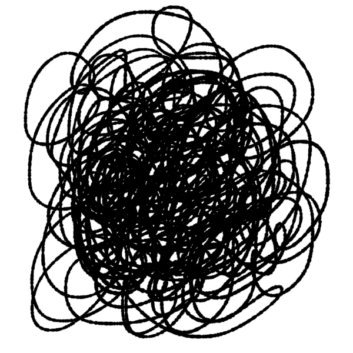

PETA 2.1 EMBEDDING MULTIMEDIA ELEMENTS IN A WEBPAGE
Hello and welcome to this website I've created! Sorry po if medyo creepy yung dating ng website na'to, but it's actually inspired by my favorite artist's album which is Billie Eilish's "WHEN WE ALL FALL ASLEEP, WHERE DO WE GO"!
A video of me studying!
Playing: LUNCH - Billie Eilish